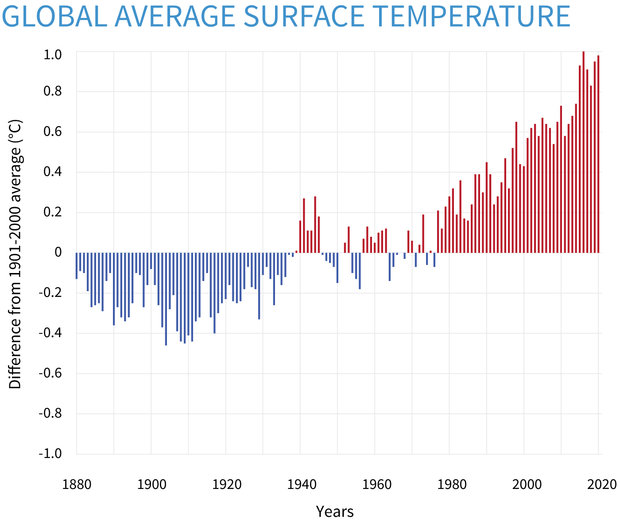
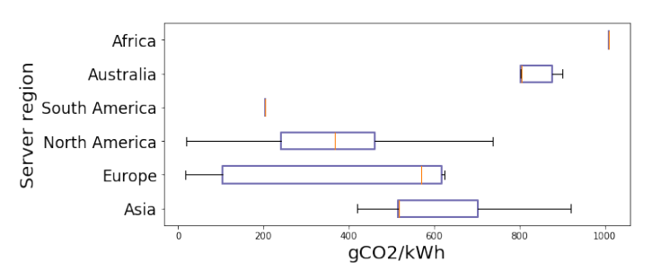

\(\newcommand\pcpu{p_\text{cpu}} \newcommand\pgpu{p_\text{gpu}} \newcommand\pdram{p_\text{dram}} \newcommand\pue{\text{PUE}} \newcommand\emissions{\text{emissions}} \newcommand\emissionsPerPower{R_{\text{power} \to \text{emit}}}\) In this lecture, ask the question: what is the environmental impact of large language models?
Climate change. On one hand, we’ve all heard about the very serious dangers of climate change (article, article):
- We’re already 1.2 °C above pre-industrial levels
- Need to remain below 1.5 °C to avert climate crisis
- Under current trajectory, will get to 2.7 °C within the next few decades

Large language models. On the other hand, we see a massive increase in the amount of compute required to train large language models (and therefore contributing to emissions). Here are some example data points:
- Strubell et al. 2019 estimated that training 626,000 pounds of CO2eq (the lifetime emissions of 5 cars).
- DeepMind’s Gopher reported that training produced an estimated 380 net metric tons CO2eq.
How do connect large language models and environmental impact?
Learning goals:
- Gain a holistic understanding of how large language models fits into the larger environmental story.
- Be able to calculate the emissions impact how training a particular language model.
- Gain an awareness and even personal responsibility towards monitoring and mitigating (negative) environmental impact.
Caveats:
- This lecture focuses exclusively on understanding the (environmental) costs. There are benefits to large language models that would be need to be considered in a tradeoff. How to do that is very challenging.
- At the same time, the benefits and costs often very unevenly on the world’s population, with costs falling “disproportionately on the poor and vulnerable”.
- All the numbers that are presented are estimates, because:
- there is a lack of monitoring and information on data centers,
- often this information is proprietary, and
- it is difficult to do credit/blame assignment with amortized costs (e.g., building the data center + training many models, training one model + adapting it to many downstream tasks).
Life cycle assessment
This section is largely based on Ligozat et al. (2021).
Philosophy. Most work on the environmental impact of AI and machine learning focuses on greenhouse gas emissions (motivated by climate change), but it is important (though difficult) to take a systems approach to think about:
- the full environmental impact (emissions, water footprint) of
- the full lifecycle of the IT equipment (e.g., production, use, end of life).
Life cycle assessment (LCA).
- The Life cycle assessment (LCA) (ISO 14040 and 14044) offers a framework to do this.
- Need to “take a systems perspective” to avoid “solutions to one problem creates several new and often ignored problems”.
Life cycle of IT equipment:
- Production:
- Raw material extraction: all processes to extract ore and convert into metals
- Manufacturing: includes all processes that create the equipment
- Transport: shipping the equipment
- Use: actual energy consumption of the actual equipment
- End of life: dismantle, recycle/dispose of equipment
Considerations in the life cycle:
- Production
- We don’t have life cycle assessments for GPUs/TPUs
- CPU only data center in France: 40% of GHG emissions were due to the production phase (Berthoud et al. 2020)
- A data center is built for many purposes, need to do credit assignment to determine what share is due to large language models (hard to estimate in advance, since things change rapidly).
- Example: Manufacturing accounts for 75% of the total emissions of an iPhone 5
- Use
- Mostly depends on carbon intensity of energy sources (coal or hydroelectric)
- End of life
- Generally not well documented
- 80% of electronic equipment is not formally collected
The ‘Use’ stage:
- Data: need to acquire, produce, and store data
- Learning: invest in training a large language model
- This includes experimentation and hyperparameter tuning.
- This is a “one-time cost”…until you need to update the model again.
- Inference: running the model in production
- Example: Google gets 5.6 billion search queries a day (source).
- Often what is deployed is a much smaller model that is distilled from the large model (which can be a lot smaller if task-specific).
- If you need to make multiple predictions (e.g., sentiment, topic classification, etc.), can encode sentence once (e.g., BERT) and use different task-specific heads.

Environmental impact:
- Greenhouse gas emissions: leads to climate change
- Water footprint: freshwater is a scarce resource in some regions
- Data center uses water for cooling (which requires electricity)
- Electricity generation is the second largest water consumer, and treating water and waste water requires electricity
- Human toxicity: chemicals that are released into the environment (air, water, soil) that can cause cancer, etc.
- Chip manufacturing create toxic waste sites in Silicon Valley
- Abiotic resource depletion
- Fossil fuels
- Minerals (lithium, cobalt) used to manufacture electronic devices You can learn more about the environmental impact of data centers.
Other second-order effects (more details):
- More efficiency creates more demand (rebound effect and Jevon’s paradox)
- Environmental change (accelerated desertification, increased extinction rates)
- Melting permafrost in turn accelerates greenhouse gas emissions
- Chip shortages lead to stoppages in automobile manufacturing
Climate change
While it is important to think about the full life cycle, we will primarily focus on climate change and greenhouse gas emissions, since this is what much of the environmental impact of AI and machine learning focuses on.
Temperatures are rising:
- Average surface temperature has increased by 2.14˚F (1.19˚C) since 1900.
- 10 warmest years have occurred since 2005.
- Temperatures increasing over time (source): 
Negative impacts:
- Increased natural disasters (extreme heat waves, floods, droughts, wildfires)
- Higher sea levels destroy coastal communities, wildlife ecosystems
Causes:
- Greenhouse gases (carbon dioxide, methane, nitrous oxide) emitted into the atmosphere traps sun’s heat (correlation over last 800000 years)
- Increased 90% since 1970 (source)
- Accelerated by human activities:
- Burning of fossil fuels (coal, oil, gas) for generating electricity, manufacturing, transportation (cars, trucks, ships, planes)
- Growing crops (fertilizers)
- Cutting down forests (e.g., to create farms)

Measurement of carbon emissions is kg CO2 eq:
- Each greenhouse gas has a global warming potential (GWP):
- Depends on (i) amount of heat absorbed and (ii) how long it sticks around in the atmosphere.
- For CO2, GWP = 1 (defined as the reference).
- For methane, GWP = 25 over 100 years.
- For nitrous oxide, GWP = 300 over 100 years (because it sticks around for so long - 121 years).
Energy use and greenhouse gas emissions
We have so far discussed greenhouse gas emissions and its effect on climate change, an especially salient form of environmental impact. Data centers use energy (in the form of electricity). How does that map onto emissions? The answer is it depends how that electricity is being generated.
Carbon intensity: amount of carbon emitted per kilowatt hour of energy used (source)
- Fossil fuels (coal, gas) produce the most emissions (from direct emissions)
- Other green energy (solar, wind) also have emissions if take into account the entire lifecycle (construction of power plants, mining, waste management)
- Running same job in Quebec (hydroelectric) would have 30x less emissions than Estonia (coal)

From Lacoste et al. (2019): 
- Depends on location (what kind of power plants are there)
- Depends on temporal effects (seasons, time of day)
- Electricity exchanges means its harder to keep track and the negative effects are often elsewhere
- 40% of emissions in California’s main Balancing Authority (BA) were produced elsewhere
Data centers statistics (Md Abu Bakar Siddik et al., 2021):
- Globally, data centers use 205 billion kWh of electricity in 2018 (1% of total electricity use).
- In the United States, data centers use 1.8% of electricity in 2014.
- 30% of all data centers are in the United States.
- 0.5% of total US greenhouse gas emissions are attributable to data centers.
- Good news: Computing workloads have increased 550% from 2010 to 2018, but electricity consumption increased by only 6% (due to improvements in energy efficiency).
Estimating emissions for training models
Now let us try to compute the energy use and therefore greenhouse gas emissions for training jobs.
ML CO2 Impact Calculator (Lacoste et al., 2019) provides an easy way to estimate emissions based on hardware, hours use, provider, and region.
Strubell et al., 2018
This was the first paper to really spark awareness of environmental impact within the NLP community.
Compute power use in kWh:
- \(\pcpu\): average power (W) from CPUs
- \(\pgpu\): average power (W) from GPUs
- \(\pdram\): average power (W) from DRAM
- \(\pue\): Power usage effectiveness: total power supplied to data center / power consumed by IT equipment
They used average values:
- \(\pue = 1.58\) (2018 global average for data centers)
- \(\emissionsPerPower = 0.954\) (2018 average emissions - pounds per kWh)
Results.
- BERT-base (110M parameters): 1438 lbs CO2eq
- NVIDIA trains in 79.2 hours on 64 V100 GPUs
- Neural architecture search (213M parameters) to obtain Evolved Transformer So et al. (2019): 626,155 lbs CO2eq
- Base model takes 10 hours to train (300K steps) on one TPUv2
- Conclude takes 32,623 hours to train (979M steps)
- 1 passenger on a round trip flight from New York to San Francisco: 1984 lbs CO2eq (0.9 tCO2eq)
- Lifetime of a car: 126,000 lbs CO2eq
Patterson et al., 2021
Simple formula:
\[\emissions = \emissionsPerPower (\text{energy-train} + \text{queries} \cdot \text{energy-inference})\]- NVIDIA: 80% of the ML workload is inference, not training
Many design decisions
- Model architecture: Transformer versus Evolved Transformer
- Processor: NVIDIA’s P100 versus Google TPUs
- Data center: average (1.58) versus Google’s (1.11)
- Energy supply mix (e.g., coal, hydroelectric): average (0.429 kg CO2eq / kWh) versus Google’s (0.080 kg CO2eq / kWh)
- Note: gross is 0.478, net is 0.080
- Deduct the clean energy sold to other companies

For training:
\[\emissions = \text{hours-to-train} \cdot \text{num-processors} \cdot \text{power-per-processor} \cdot \text{PUE} \cdot \emissionsPerPower\]Estimates of models:
- T5: 86 MWh, 47 tCO2eq
- GShard (mixture of experts for machine translation): 24 MWh, 4.3 net tCO2eq
- Switch Transformer: 179 MWh, 59 tCO2eq
- GPT3: 1287 MWh, 552 tCO2eq
Rebuttal to Strubell et al. (2019)’s neural architecture search estimate:
- Small proxy task to search, so 18.7x too high
- Neural architecture search is done once, and everyone can now use Evolved Transformer
- Overestimated emissions by 88x
Points:
- Measurement is better than online calculators if possible
- Google used 12.2 tWh (training Google’s 4 largest models less than 0.005%)
- This is 1/10 of compute spent on bitcoin mining
Python packages
Summary
- Environmental impact is a huge topic. Everything is connected, so it’s hard to get out a clean quantitative metric. But should really look at the whole picture.
- While the total footprint of large language models is small today, it is growing very quickly.
- General-purpose nature of large language models offers potential for savings (“train once” and apply to many different tasks). But they are much more expensive and need to be retrained. What are the tradeoffs?
- Mitigation:
- Try to train models on cleaner energy data centers
- Carbon offsets have varying effectiveness (forest planting campaigns yield monocultures)
- More efficient model architectures, training procedures, hardware (but beware of rebound effects)
- Reporting:
- Raises awareness (imagine if it was expected that every paper would report emissions)
- Aligning incentive (people currently fixate on accuracy, but carbon emissions is important too!)
Further reading
General information:
- Foundation models report (environment section).
- Energy and Policy Considerations for Deep Learning in NLP. Emma Strubell, Ananya Ganesh, A. McCallum. ACL 2019.
- Quantifying the Carbon Emissions of Machine Learning. Alexandre Lacoste, Alexandra Luccioni, V. Schmidt, Thomas Dandres. 2019. Introduces ML Carbon Emissions Calculator.
- Towards the Systematic Reporting of the Energy and Carbon Footprints of Machine Learning. Peter Henderson, Jieru Hu, Joshua Romoff, Emma Brunskill, Dan Jurafsky, Joelle Pineau. 2020. Introduces the environment impact tracker tool.
- Carbon Emissions and Large Neural Network Training. David Patterson, Joseph Gonzalez, Quoc V. Le, Chen Liang, Lluís-Miquel Munguía, D. Rothchild, David R. So, Maud Texier, J. Dean. 2021. From Google.
- Sustainable AI: Environmental Implications, Challenges and Opportunities. Carole-Jean Wu, R. Raghavendra, Udit Gupta, Bilge Acun, Newsha Ardalani, Kiwan Maeng, Gloria Chang, Fiona Aga Behram, James Huang, Charles Bai, M. Gschwind, Anurag Gupta, Myle Ott, Anastasia Melnikov, Salvatore Candido, David Brooks, Geeta Chauhan, Benjamin Lee, Hsien-Hsin S. Lee, Bugra Akyildiz, Maximilian Balandat, Joe Spisak, R. Jain, M. Rabbat, K. Hazelwood. 2021. From Facebook.
- Unraveling the hidden environmental impacts of AI solutions for environment. Anne-Laure Ligozat, J. Lefèvre, A. Bugeau, Jacques Combaz. 2021.
- The environmental footprint of data centers in the United States.